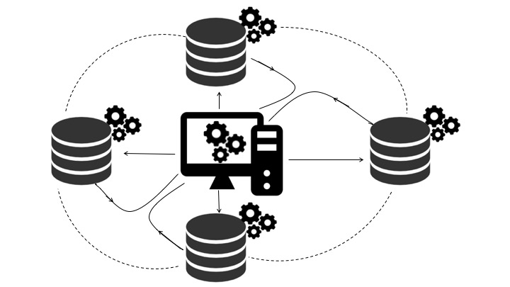
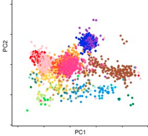
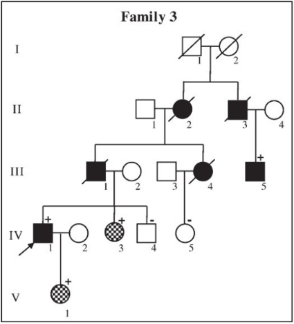
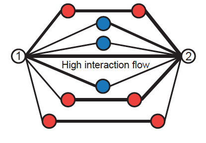
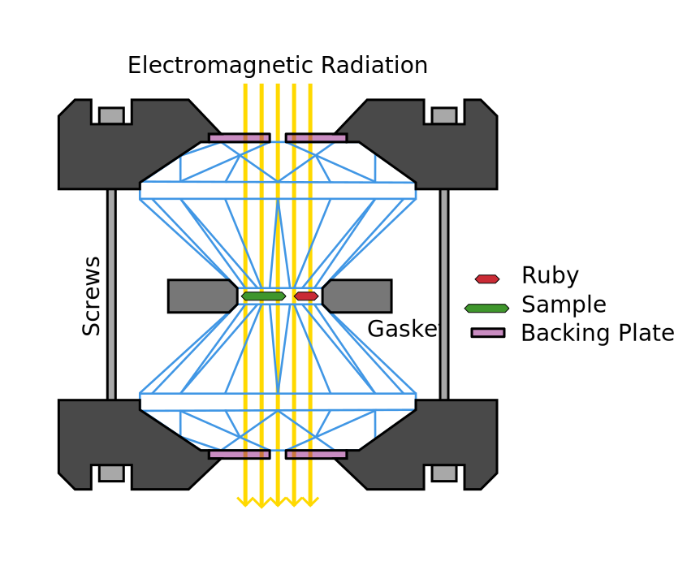

Decentralized GWAS 
Genome Wide Association Studies GWAS aim to tease out associtations between single nucleotide polymorphism (SNP) (mutations of a single basepair) and a particular disease or phenotype. Because a phenotype is often influenced by many SNPs, often a large sample size is needed to achieve statistical power. The two common approaches are 1) to gather the required amount of data and analyze the data in one location, or 2) use meta-study techniques. The first approach leads to significant loss in privacy of participants and can have other associated costs. The second approach can lead to bias. In this project, we implemented a decentralized end-to-end GWAS pipeline with population structure control via PCA. The manuscript is currently under preparation.
Dimensionality reduction in PopGen 
The picture to the left shows a PCA plot of the Population Reference Sample (POPRES) from Nelson, et. al. 2008 data. Dimensionality reduction algorithms have been a main staple population genetics. PCA is the most common and often most biologically meaningful approach for dimensionality reduction on the genotype matrix (see McVean, 2009). Flashpca and EIGENSOFT provide scalable software for performing PCA, however, they do not handle more sophisticated PCA approaches that are often useful to address biases in the data. For and example see McVean, 2009 for how lack fo balance in samples from each region can lead to bias. This project aims at producing a software package that interfaces with the common input data formats, addresses the aforementioned bias via, weighted PCA, debiases ancient DNA projections, provides other exploratory dimensionality reduction approaches and works with data collected on different arrays. As opposed to the two aforementioned softwares that aim at biobank size datasets, this package is aimed for use with small and medium size cohorts. The accompanied tutorial will be linked here. This project is currently in progress.
Clinical Genetics 
text text
Computational Denoising 
For many biological datasets, Networks provide a nice abstraction of the dynamics and relations between the pieces. Biological data is often noisy, due to both biological and technical noise. Reducing the noise, if possible, can be costly. On the other hand, working with noisy data can lead to inaccurate conclusions. One remedy is to use biological intuition to denoise the data. I've been involved with two projects in computational denoising of biological data. My main contribution is in developing Network Enhancement. (to appear in Nature Communications) we used a combination of diffusion and regularization for denoising generic biological networks. The intuition for diffusion is that in biology two elements being closed to the same element often implies that the initial two elements are close. On the other hand, regularization leads to a more sparse network and controls the scale. We show that mathematically, our algorithm leads to a "smoothed out" PCA, meaning that smaller singular values are shrunk more aggressively. I've also been involved in developing a Hi-C network denoising algorithm presented here.
Microbiom
text text
High pressure physics 
In 1935, Wigner and Huntington proposed that at low temperatures and high pressures, the bonds in hydrogen molecules destablize leading to formation of atomic hydrogen and thereby metallic hydrogen. This claim, lead to an arms race for constructing metallic hydrogen. Later Ashcroft argued that, once produced, metallic hydrogen could stay superconductive up to room temperature and Isaac Silvera (2010) argued that metallic hydrogen could provide the best rocket fuel. These theoretical findings accelerated the importance of experimental discovery of metallic hydrogen. Prior to starting as a graduate student at Stanford, I took a year off to work in the Silvera Lab, where I learned about low-temperature, high-pressure physics as well as spectroscopy. The picture to the left shows how these high pressures are created. The sample is loaded in the liquid form (at low temperature) in a hole created in a metallic gasket. The sample is then trapped by two dimonds from top and bottom, moving the diamonds closer to each other increases the pressure on the sample.